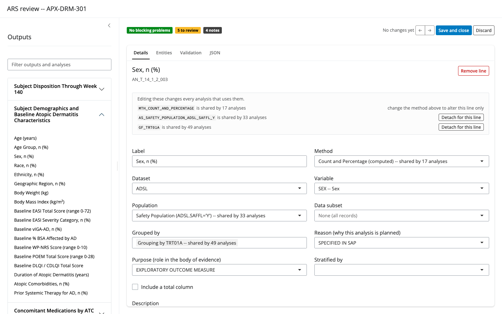

From annotated TLF shell to publication-ready clinical table, in one reproducible pipeline.
Clinical programmers spend hours translating a lead programmer’s annotated TLF shell into R code, then reformatting output to match the shell layout. arsbridge automates both halves. It reads the annotations directly from the shell – a Word .docx, or an Excel .xlsx with one worksheet per output – checks every variable against your ADaM spec, generates a CDISC Analysis Results Standard (ARS) JSON, executes it against real ADaM datasets with cards, and renders a formatted GT table ready to ship.
No manual transcription. No orphan numbers. Every value auditable back to its source.
What you get
| Capability | What it means for you |
|---|---|
| Word or Excel shells | Point spec_to_ars() at a .docx or an .xlsx and the rest of the pipeline is identical. An Excel shell is one worksheet per output, annotated in-cell in red; a Word shell is annotated the way it always was. Both readers share one annotation grammar, and a parity check enforces that the same study read either way produces the same ARS. |
| Three ways to read the shell | A deterministic regex baseline always runs; you choose how the gaps it cannot resolve get filled — regex only (no key), a Copilot supplement (no API call), or a live LLM (opt-in with a key). Same spec-gated output from all three. |
| Spec-gated validation | Every variable proposed — by the regex, a supplement, or the LLM — is checked against your ADaM spec. A variable missing from the spec is rejected and logged, never silently invented. |
| Human-in-the-loop review |
edit_ars() opens the generated ARS in a structured Shiny editor: the shell’s outputs and lines with validation findings badged on, spec-constrained dropdowns, add/remove/reorder for missed lines, undo and crash recovery. Every save is backed up, logged to a QC sidecar, and checked against the official ARS v1.0 schema. |
| A guided end-to-end workflow |
ars_workflow("my_study/") walks the whole journey in one app, in five steps: set up the project, build, optionally correct with a supplement, review, read the results. The build runs in a background process, so the UI stays responsive and shows the run log as it goes; everything it produced — and everything it declined to produce, with the reason — comes back in one payload. Every step’s status is derived from the files on disk, so closing the app never loses progress, and the results survive a restart. |
| CDISC ARS JSON output | The extraction result is a structured, versioned file you can diff, review, and feed to downstream tools like siera. |
| Native ARD execution | Run ARS JSON directly against .xpt or .csv datasets using cards, with no dataset-loading boilerplate. |
| Codelist-decoded categories | A coded categorical variable (e.g. a numeric DCSREASN) is decoded through the ADaM spec’s codelist: the ARD and rendered table show DEATH, not 1, in codelist order, with unobserved terms reported as n = 0. Unannotated coded column axes get their column labels from the codelist too. |
| Publication-ready tables |
ars_render_tlf() builds a formatted GT table: treatment columns detected, percentages rescaled, row groups labelled, ARS footnotes carried through. |
| The filled shell, back in Excel | For an Excel shell, ars_fill_shell() returns the author’s own workbook with the results in it and the red annotations gone. Tables, listings and figures: a listing’s one template row expands into a row per record, with the footnote below it moved down; a figure’s series is computed from the prose the shell states it in. The layout, labels, merges, fonts and footnotes are never rebuilt — only left alone — and each placeholder’s own xx.x decides how its number is formatted. A cell whose result does not exist keeps its placeholder and is reported, because a blank cell in a clinical table reads as a zero — while an arm with no qualifying subject reads 0 (0.0), since that is a result. Column headers written Placebo (N=XX) are answered with the denominator their own percentages use. |
| Partial tables, full traceability | Statistics arsbridge cannot yet compute are reserved as keyed manual_pending rows. Each shows a [‡ manual] marker in the table until a programmer fills it with a validated script. Nothing is ever an orphan number. |
The pipeline at a glance
flowchart TD
SHELL_D(["Annotated shell — Word\n(.docx)"])
SHELL_X(["Annotated shell — Excel\n(.xlsx, one sheet per output)"])
SPEC(["ADaM Spec\n(define.xml or .xlsx)"])
ADAM(["ADaM Datasets\n(.xpt or .csv)"])
subgraph STEP1 ["Step 1 · Read the shell"]
R["Regex baseline\n(colour · bold · brackets · plain-text)\nALWAYS runs"]
F{"Row the regex\ncould not resolve?"}
C["Reviewed supplement\n(no API call)"]
L["Live LLM\n(use_llm = TRUE)"]
G{"Spec gate\nDATASET.VARIABLE\nexists in spec?"}
R --> F
F -->|"regex only"| G
F -->|"+ supplement"| C --> G
F -->|"LLM API"| L --> G
end
subgraph STEP2 ["Step 2 · Validate"]
V["Excel validation report\nPASS / WARN / FAIL per annotation"]
end
subgraph STEP3 ["Step 3 · Review and correct"]
RV["edit_ars()\nstructured review, spec-driven corrections"]
end
subgraph STEP4 ["Step 4 · Execute"]
E["ars_to_ard()\nruns cards against ADaM data"]
MP["manual_pending rows\nfor statistics not yet computable"]
end
subgraph STEP5 ["Step 5 · Deliver"]
T["ars_render_tlf()\nformatted GT table"]
FS["ars_fill_shell()\nthe Excel shell, filled\n(.xlsx shells only)"]
end
SHELL_D --> STEP1
SHELL_X --> STEP1
SPEC --> G
G -->|"pass"| ARS["ARS JSON\n(CDISC v1.0)"]
G -->|"reject"| BLK["Blocker log\n(named and fixable)"]
ARS --> STEP2
ARS --> STEP3
STEP2 -->|"gaps overlaid"| RV
RV -->|"corrected ARS JSON"| STEP4
ADAM --> STEP4
STEP4 --> E
E --> MP
E --> STEP5
MP -->|"fill + validate"| STEP5
T --> TLF["Clinical table\n(GT · Word-ready)"]
SHELL_X -.->|"the same workbook"| FS
FS --> XL["Filled shell\n(.xlsx · annotations removed)"]The app, step by step
ars_workflow("my_study/") is the whole pipeline with a UI on it. One phase, five steps:
flowchart TD
P["1 · Project setup\nshell · ADaM spec · ADaM folder"]
B["2 · Build\nbackground process"]
S["3 · Supplement (optional)\ndraft → correct → rebuild"]
RV["4 · Review & edit\nedit_ars()"]
RS["5 · Results\nartifacts · diagnostics · what was left undone"]
P --> B
B --> RS
B -.->|"something wrong?"| S
S -.->|"rebuild"| B
B --> RV
RV -.->|"corrected"| BThe build comes second, before any supplement. A deterministic build needs no assistant and no API key, so nothing stands between recording your inputs and seeing what the engine can do on its own. If it got something wrong, then generate a draft supplement from what the parser already found, correct the handful of judgements that are wrong, and rebuild. Correcting specific decisions beats authoring a document from scratch.
The build runs off the UI’s process. A real study takes minutes, and an app that runs that on its own process is frozen for the duration — you cannot tell a slow build from a hung one. arsbridge sends it to a background R process (callr) and tails the run log while it goes. A fresh process each time means no state carries over between runs, which is worth having when the output is a regulatory deliverable.
The same build is available headlessly, and returns the same value:
payload <- ars_workflow_run(
shell_path = "inputs/shells.xlsx",
adam_spec_path = "inputs/adam_spec.xlsx",
adam_dir = "inputs/ADaM",
output_dir = "outputs"
)
payload$status # success | partial | error
payload$artifacts$filled_workbook # what it produced
subset(payload$diagnostics, severity == "FAIL") # what stopped it
payload$unfilled_cells # cells left showing xx.x, and whyars_workflow_run() takes paths, holds no state, and never throws — a run that dies still returns a payload saying which stage failed and where its log is. That is what makes it safe to send to a worker, and useful in a script or a scheduled job.
Review and correct before executing
The semantic enrichment is automated, so the generated ARS JSON is a draft: a method can be misclassified, a population can be wrong, an annotated line can be missed entirely. edit_ars() is the human-in-the-loop stage between generating and executing.
res <- spec_to_ars(
shell_path = "inputs/annotated_shells.docx",
adam_spec_path = "inputs/adam_spec.xlsx"
)
# Review and correct: the result carries the event, the validation
# report and the spec, so nothing else needs passing.
corrected <- edit_ars(res)
# Execute what you corrected.
ard <- ars_to_ard(corrected, adam_dir = "adam")
You see the shell’s structure rather than JSON – each output with its analysis lines beneath it – with validation findings badged onto the lines they concern. Selecting a line resolves its ids into what they mean: the method’s name plus whether the engine can actually execute it, the population’s condition, the variables the results are split by. Variables come from the ADaM spec, so they cannot be mistyped, and every dropdown says how many analyses share the entity, because editing a shared method edits all of them.
Nothing is written until you save, and saving shows what changed first. The previous file is backed up, the write is atomic, and the edit log goes to a sidecar .edits.json so the ARS JSON itself stays CDISC-clean – export_edit_log() turns that sidecar into a QC workbook.
Every change is undoable, and a session that dies is offered back the next time you open the same file, so a review cannot be lost to a mis-click or a crashed browser. ars_conformance() checks any reporting event against the official CDISC ARS v1.0 schema (vendored and pinned in the package), and a freshly generated event validates clean.
Use view_ars() for the same view without the ability to change anything, and validate_ars_model() for the findings on the command line. The viewer needs shiny, bslib and DT, which are optional:
install.packages(c("shiny", "bslib", "DT"))Installation
# install.packages("devtools")
devtools::install_github("tavakohr/arsbridge")For exact Clopper-Pearson confidence intervals, also install the optional cardx. Without it, those cells degrade gracefully to manual_pending placeholders rather than erroring.
install.packages("cardx")No LLM API key? You do not need one.
arsbridgeruns on regex + heuristics alone, andars_copilot_instructions()sets up a no-API workflow that reaches near-LLM accuracy through a chat assistant (Copilot/ChatGPT) — seevignette("no-api-access").
Quick start with the bundled example
You do not need any external files – or an API key – to run the full pipeline. The package ships the CDSC-ALZ-201 training study: a synthetic Alzheimer’s study whose shells are annotated in both Word and Excel and whose datasets are the public CDISC pilot Xanomeline data from pharmaverseadam (Apache-2.0, no real patient data).
library(arsbridge)
# 1. Run the extraction pipeline on the bundled study (deterministic; seconds)
res <- spec_to_ars_example()
# res$n_tlfs # 8 (5 tables, 2 listings, 1 figure)
# 2. Review the validation findings
table(res$validation$status)
# 3. Review and correct the generated ARS interactively
# (needs the optional shiny, bslib and DT packages)
edit_ars(res)
# 4. Load the bundled ADaM data
adam_dir <- file.path(tempdir(), "ADaM")
unzip(arsbridge_example("ADaM.zip"), exdir = adam_dir)
# 5. Execute the ARS JSON into a tidy ARD
ard <- ars_to_ard(ars_path = res$ars_path, adam_dir = adam_dir)
# 6. Render the Subject Disposition table
ars_render_tlf(res$ars_path, ard, "T_14_1_1")And because the bundle also carries an Excel shell, the filled-workbook deliverable works offline too:
res <- spec_to_ars_example(shell_format = "xlsx")
ard <- ars_to_ard(res$ars_path, adam_dir = adam_dir)
ars_fill_shell(
shell_path = arsbridge_example("annotated_shell.xlsx"),
ars = res$ars_path,
ard = ard,
output_path = file.path(tempdir(), "filled_shells.xlsx"),
adam_dir = adam_dir
)
# open it: the placeholders now hold the study's real numbersStep-by-step with your own study
Step 1: Set up LLM access
arsbridge works with Anthropic, OpenAI, Gemini, or any OpenAI-compatible provider. Store keys in ~/.Renviron so they persist across sessions.
library(arsbridge)
set_anthropic_key() # recommended for clinical text (lowest content-filter false-positive rate)
set_openai_key() # alternative
set_gemini_key() # alternative
show_active_llm() # confirm which provider is activeProvider priority: when multiple keys are configured, arsbridge searches in order: Anthropic, OpenAI, Gemini. Override this anytime:
# In .Renviron
ARS_LLM_PROVIDER=openai
# Or at runtime
options(ars.llm.provider = "gemini")Switching to a newer model or a different provider requires almost no effort. To use a newer model from the same provider, pass model =:
spec_to_ars(..., model = "claude-opus-4-8")To add a brand-new provider (GLM, DeepSeek, OpenRouter), add one entry to the registry in R/llm_providers.R: its key env variable, default model, the ellmer chat constructor, and a base_url if it is OpenAI-compatible. No other code changes.
set_llm_key("glm", "your-glm-key")
Sys.setenv(ARS_LLM_PROVIDER = "glm")
spec_to_ars(..., model = "glm-4.6")Step 2: Extract ARS JSON from the annotated shell
spec_to_ars() is the main entry point. Point it at your annotated shell and ADaM spec; it writes a CDISC ARS JSON and an Excel validation report.
The shell can be Word or Excel – everything downstream is the same either way:
| Shell format | How each output is found | How a row is annotated |
|---|---|---|
.docx |
a heading paragraph (Table 14.1.1) followed by its table |
a red run in the stub cell, or a Label -> DATASET.VAR line below the table |
.xlsx |
one worksheet per output, named for it | a red run in the stub cell; the column axis and source dataset in the header cell ([columns -> ADSL.TRT01A; source ADSL]) |
An Excel shell needs no heading_patterns: the worksheet name is the output number.
res <- spec_to_ars(
shell_path = "inputs/my_study_TLF_shells_annotated.xlsx", # or .docx
adam_spec_path = "inputs/adam_spec_CDSC-ALZ-201.xlsx", # or define.xml
output_path = "outputs/reporting_event.json",
report_path = "outputs/spec_validation_report.xlsx",
study_id = "CDSC-ALZ-201",
study_name = "Xanomeline Transdermal System in Alzheimer's Disease",
verbose = TRUE
)| Argument | What to pass |
|---|---|
shell_path |
The annotated shell from the lead programmer: .docx or .xlsx
|
adam_spec_path |
define.xml (preferred) or an ADaM spec .xlsx / .xls
|
output_path |
Where to save the CDISC ARS JSON |
report_path |
Where to save the Excel validation workbook |
Step 3: Review the validation report
The Excel report cross-references every shell annotation against the ADaM spec and stamps each one PASS, WARN, or FAIL. This is your opportunity to catch typos and missing ADaM variables before any analysis code runs.
Each row is tinted by its status, and the workbook’s Legend sheet spells this out. The colors (and their exact fill hex codes) are:
| Status | Fill | Hex | Meaning |
|---|---|---|---|
| PASS | green | E2EFDA |
Annotation matched a dataset + variable in the ADaM spec. No action needed. |
| WARN | amber | FFF2CC |
Needs review (e.g. an uncertain mapping). The ARS JSON is still generated. |
| FAIL | red | FCE4D6 |
Could not be validated (invalid dataset/variable, or a blocking gap). Fix before use. |
| INFO | blue | DDEBF7 |
Informational note (mainly the Diagnostics sheet). Not a validation failure. |
WARN and FAIL are review signals, not automatic blockers — the JSON is written even when they are present, so a qualified programmer can triage them. A cell with no tint simply carries no status.
# Counts by status
table(res$validation$status)
# Filter to problems only
subset(res$validation, status %in% c("WARN", "FAIL"))Step 4: Execute to a tidy ARD
ars_to_ard() runs the ARS JSON against your ADaM datasets and returns a tidy ARD in cards format. It auto-loads datasets, applies population and data subset filters recursively, and calls the right cards function for each method.
ard <- ars_to_ard(
ars_path = "outputs/reporting_event.json",
adam_dir = "inputs/ADaM"
)
print(ard)During development, narrow the run to specific outputs or analyses for faster iteration:
# Only the demographics table
ard_demog <- ars_to_ard(
ars_path = "outputs/reporting_event.json",
adam_dir = "inputs/ADaM",
output_ids = "T_DEMOG"
)
# Only one analysis within that table
ard_age <- ars_to_ard(
ars_path = "outputs/reporting_event.json",
adam_dir = "inputs/ADaM",
analysis_ids = "AN_DEMOG_AGE"
)Step 5: Render the formatted table
gt_table <- ars_render_tlf(
ars_path = "outputs/reporting_event.json",
ard = ard,
output_id = "T_14_1_1"
)
gt_tablears_render_tlf() handles all the formatting automatically: treatment columns and row groups are detected from the ARD, cards proportions are rescaled to display percentages, continuous summaries are laid out as Mean (SD) / Median / (Min, Max) rows, and ARS titles and footnotes are attached as GT source notes.
To inspect or customise the underlying tfrmt spec before rendering:
# Inspect the tfrmt spec for one output
spec <- ars_to_tfrmt("outputs/reporting_event.json", ard, "T_14_1_1")
# Render all outputs in one pass
specs <- ars_to_tfrmt_list("outputs/reporting_event.json", ard)
all_tables <- lapply(names(specs), function(oid)
ars_render_tlf("outputs/reporting_event.json", ard, oid))Step 6: Fill any reserved cells
Some statistics fall outside what arsbridge can compute today. These are not dropped or replaced with zeros. Instead, each one becomes a keyed manual_pending row in the ARD with a [‡ manual] marker in the rendered table, so every programmer knows exactly what still needs a derivation.
# See what is waiting
ars_manual_worklist(ard)
# Compute the value in a validated script, then write it back
i <- which(ard$result_status == "manual_pending")[1]
ard$stat[[i]] <- 0.012
ard$result_status[i] <- "manual_filled"
ard$value_source[i] <- "manual"
ard$derivation_ref[i] <- "programs/cmh_t1421.R" # the program that produced it
# Confirm every manual fill is traceable before rendering
ars_validate_manual_fills(ard)ars_render_all() runs this check automatically and blocks any untraceable value before it reaches the final document.
Step 7: Write the results back into the Excel shell
If the study was authored as an Excel shell, the finished table already exists — the layout, the row labels, the column headers, the merges, the footnotes, and in each placeholder the number of decimal places that cell takes. All that is missing is the numbers. ars_fill_shell() puts them in and takes the red annotations out.
res <- ars_fill_shell(
shell_path = "inputs/shells.xlsx",
ars = "outputs/reporting_event.json",
ard = ard,
adam_dir = "inputs/ADaM", # listings and figures need the data
output_path = "outputs/filled_shells.xlsx"
)
res$filled # cells written
res$pending # cells left showing their placeholder
res$diagnostics # one row per unfilled cell: which output, which cell, whyNothing is laid out or re-created. The workbook is opened, the mapped cells are changed, and it is saved — so a run that is kept keeps its own font, and the author’s column widths, row heights and merges come through untouched.
Which result belongs in which cell is not decided at this point. It was recorded when the ARS was built, in each output’s _meta$shell_fill cell map, while the shell’s geometry and the analyses were both in hand. That is why filling a shell needs the ARS that came from that shell.
Three things are deliberate:
-
The placeholder is the format.
xx.x (xx.xx)writes one decimal then two, and keeps the parentheses. Nothing else in the pipeline carries that decision, because the shell’s author already made it. -
An unfillable cell keeps its placeholder and appears in
res$diagnosticswith the reason — no result in the ARD, or reserved for manual derivation. An empty cell in a clinical table reads as a zero. Passkeep_pending_placeholders = FALSEto blank them instead, for a workbook going to someone who will complete it by hand. An arm with no qualifying subject is not one of these cases: it is filled with0 (0.0), because that is the result — see the ARD’s zero-group completion above. -
strip_annotations = FALSEkeeps the red annotations next to the numbers, which is useful while reviewing and wrong for a deliverable.
A column header written Placebo (N=XX) is answered too: each result column’s header takes the denominator its own percentages are computed against, so Placebo (N=86) can be checked against the cells beneath it. A column whose analyses disagree about their denominator — and one showing no percentage at all — keeps the placeholder rather than stating a population the table cannot be read against.
A listing is filled differently from a table, because its shell states one template row standing for however many rows the data has. Filling it inserts rows — and everything below, including a footnote and its merge, moves down to make room. The rows written inherit the template row’s own fonts and alignment.
A nested block — <System Organ Class> over <Preferred Term> — expands the same way: the authored pair becomes one line per system organ class followed by its own preferred terms, each line written from its own authored row, so a term keeps the indent the author gave it. Classes and terms are ordered by descending incidence (an authored sort: alphabetical or sort: desc-freq(<column>) overrides), through the same function the Word renderer uses — a study rendered and the same study filled cannot disagree about which class comes first.
A figure sheet has no analyses at all: the shell states the plot as prose (Y axis -> mean of ADVS.AVAL, Series (colour) -> ADVS.TRTA, Filter -> ADVS.PARAMCD='PULSE'). ars_fill_shell() computes that series from the datasets and writes it as a data block — one row per series and x-value, with n, the mean and its standard error — where the annotation block was. The numbers go in as numbers, not rounded text, because a programmer picks them up to draw the chart. The chart object itself stays whatever the author made it; drawing into someone else’s workbook is a different job from filling one in.
Both need adam_dir, since a listing’s rows are the subject-level data and a figure’s series is computed from it. Tables need only the ARD.
How arsbridge reads the shell
Every clinical study annotates its TLF shells differently. The ADaM variable for a row might appear as a red-coloured run, a bold fragment, a bracketed condition like [ADAE.AEDECOD WHERE AEREL='RELATED'], plain text after the label, or a layout that no regex was ever written for. A single detection strategy cannot cover all of these reliably.
Two things are the same no matter how you run arsbridge:
-
A deterministic regex baseline (
parse_shell_docx()for Word,parse_shell_xlsx()for Excel — one shared annotation grammar behind both) always runs — a four-layer detector over every stub cell and listing header (colour#C00000runs, bold/italic/underline, plain-textDATASET.VARIABLE, bracketed[DATASET.VAR WHERE ...]), plus flexible TLF-heading recognition: a bareTable 14.1.1, a colon titleTable 14.1.1: Title, and one-line headings that also carry the population, an inline annotation, and a[PROGRAMMING DATASETS USED: ...]suffix (values single-, double-, or unquoted-numeric). No API call, no key. A sponsor style the built-ins miss is handled byspec_to_ars(heading_patterns = ...). -
A hard spec gate. Every
DATASET.VARIABLE— whoever proposed it — must exist in your ADaM spec, or it is dropped, never shipped, and logged as a named blocker. The spec is the ground-truth oracle.
What differs is how the rows the regex could not resolve get filled — and that is the three approaches:
annotated shell (.docx or .xlsx)
|
regex baseline (always runs)
|
row still unresolved?
|
+--------------------+--------------------+
| | |
regex only regex + Copilot LLM API
(default) (supplement) (use_llm = TRUE)
leave the gap a chat assistant the LLM re-reads
fills gaps by hand the cell + enriches
| | |
+--------------------+--------------------+
|
HARD SPEC GATE
(the variable must be in the spec)
|
validated -> ARS JSON-
Regex only (deterministic) — the default; no key. Unresolved rows stay empty. Standard shells still produce valid ARS / ARD / output; variant layouts, groupings, Total columns, and analysis typing degrade, and one
WARNrecords the mode. -
Regex + Copilot (supplement) —
spec_to_ars(supplement = "supplement.json"). A chat assistant (Copilot/ChatGPT) reads the shell + spec by hand and returns a JSON supplement (format v4, with typed CDISC ARS conditions — no string parsing); its label-keyed analyses fill only rows the regex left blank — your authored shell annotations win a disagreement by default, or passsupplement_trust = "prefer_supplement"to let a validated supplement value override — and it confirms the table set by title and row anchors. No API call. For an Excel shell, runwrite_supplement_draft()first and hand the draft over too: the parser can already state the column axis and the row bindings, so the assistant corrects a structured draft instead of authoring one from scratch. For large shells,ars_copilot_instructions(workflow = "two_phase")splits it into evidence discovery then construction (CLI only; the app uses the single-file workflow). Seevignette("no-api-access"). -
LLM API (live) — opt in with
use_llm = TRUEand a key.extract_shell_llm()re-reads each cell and separates the display label from the variable reference in any layout, and the LLM enriches each TLF (analysis type, method, groupings), generalising to formats no regex was written for. A key alone does not trigger it — you must passuse_llm = TRUE.
All three feed the same spec gate and emit the same ARS JSON shape; _meta.extraction_mode records which one ran. See vignette("reading-engine") for the complete parsing detail.
Statistical coverage
arsbridge handles descriptive statistics natively and an expanding set of inferential statistics automatically. For anything it cannot yet compute, it reserves a traceable placeholder rather than refusing the whole table.
| Statistic | Status | Engine |
|---|---|---|
| Summary statistics (mean, SD, median, min, max) | Computed | cards::ard_continuous() |
| Counts and percentages | Computed | cards::ard_categorical() |
| AE frequencies (distinct subjects per event) | Computed | dedup then cards::ard_categorical()
|
| Subject counts (N) | Computed | cards::ard_total_n() |
| Exact Clopper-Pearson CI | Computed (requires cardx) | cardx::ard_categorical_ci() |
| Cochran-Mantel-Haenszel p-value | Computed | Base R mantelhaen.test()
|
| Newcombe difference interval | Reserved: [‡ manual]
|
Manual fill round-trip |
| Odds ratio / hazard ratio | Reserved: [‡ manual]
|
Manual fill round-trip |
| ANCOVA / MMRM | Reserved: [‡ manual]
|
Manual fill round-trip |
| NRI imputation | Reserved: [‡ manual]
|
Manual fill round-trip |
Reserved cells are never blank or coerced to a misleading zero. Each carries a unique key (analysis_id, method_id, output_id) and renders as a visible marker until a programmer supplies the value from a validated script.
TLF heading format
arsbridge splits the shell into outputs by finding TLF heading paragraphs, so the single most important thing you can do to make a shell parse cleanly is to write each heading in an identifiable way.
Do: give every output its own ordinary paragraph that begins with Table, Figure, or Listing, followed by the output number and a title. All of these are read:
Table 14.1.1
Table 14.1.1: Summary of Demographics
Table 14.1.1 Summary of Demographics
Table 14.1.1 Summary of Demographics - Safety Population ADSL.SAFFL='Y'
Table 14.1.1 Demographics - Screened Subjects ADSL.SCRNFL='Y' [PROGRAMMING DATASETS USED: ADSL]The population, an inline annotation, and a [PROGRAMMING DATASETS USED: ...] suffix may all ride on the same line; annotation values may use single quotes, double quotes, or an unquoted number (ADSL.COHORTN=1). The recommended form for a clean, portable shell is the explicit colon title — Table 14.1.1: Descriptive Title — with the population on the next line.
Avoid: these are deliberately not treated as headings, so a title hidden this way will be missed:
- the heading placed inside a text box, shape, table cell, or field/content control (keep it a normal body paragraph — page headers are also read);
- prose that merely mentions a number (
Table 14.1.1 shows ...), cross-references (See Table 14.1.1 ...), or table-of-contents lines; - a bare section number with no designator word (
14.1 Demographic and Baseline Tables).
When arsbridge finds no heading — or finds a number but no title — it says so, lists the lines it looked at, and repeats this guidance. For a sponsor template whose headings genuinely follow a different convention, pass spec_to_ars(heading_patterns = ...) (a PCRE pattern with named number/type/title groups; see ?spec_to_ars) rather than reformatting the shell.
Annotation format reference
The lead programmer marks up the shell before handing it off — a Word .docx, or an Excel .xlsx where the same annotations go in the cell alongside the label. The most common conventions:
| What to annotate | Format | Example |
|---|---|---|
| Row variable | [DATASET.VARIABLE] |
[ADSL.AGE] |
| Row with filter | [DATASET.VARIABLE WHERE condition] |
[ADAE.AEDECOD WHERE AEREL='RELATED'] |
| Population flag (column header) | [FLAG == "Y"] |
[SAFFL == "Y"] |
| Colour-marked variable | Red #C00000 run |
ADSL.AGE in red text |
| Listing column header | Label on line 1, variable on line 2 |
Subject ID / USUBJID
|
| Column group (one filter per column header) |
Label (N=XX) DATASET.VAR=value, ... IN ('a','b'), or ... is missing
|
Unknown Cohort (N=XX) ADSL.COHORTN is missing |
Column-group headers define the whole column axis by annotation: when two or more header cells filter the same variable, each condition becomes one display column — so a merged column like an “Unknown” bucket (ADSL.COHORTN is missing) works with no ADaM change. Rows matching no column are excluded from the group columns (with a WARN), and a Total (N=XX) ... header is recognized as the overall column, not a group.
Hierarchical (multi-level) headers are first-class: a parent column spanning conditioned child columns — e.g. a cohort split into severity sub-columns with its own per-parent Total, next to a sibling cohort and an overall Total — parses into an explicit column tree, and only the declared result columns are ever computed (never a Cartesian product of the grouping variables). A per-parent subtotal is scoped by the parent’s condition, so it correctly includes subjects whose child category is unknown; the overall Total is scoped by the analysis set. The declared paths travel in the ARS JSON as a documented extension (resultGroupPaths), are checked structurally by validate_ars_model() before any ARD is computed, and are reviewable in the editor’s Columns panel.
The regex pass handles colour, bold/italic/underline, bracket, and plain-text patterns. The LLM pass handles everything else, including mixed or non-standard layouts.
Dataset loading and filtering
When ars_to_ard() runs, it:
- Scans
adam_dirfor<DATASET>.xptfiles (loaded via haven) or<DATASET>.csvfiles. - Caches each dataset in memory so repeated analyses run fast.
- Applies analysis set (population) filters at the subject level via
USUBJID, intersecting the population with the analysis dataset. - Applies data subset filters within the analysis dataset, supporting recursive
AND/ORcompound expressions. - Completes the zero-count groups a filter emptied. A subset is applied before cards runs, so a treatment arm with no qualifying record is simply absent from its input and gets no row at all. For a counting method that arm’s answer is 0, not “unknown”, so the ARD is completed with
n = 0,p = 0and that arm’s own denominator — once, where every consumer sees it. A continuous summary is never completed this way: the mean of nothing is nothing.
The ARS method identifier in each analysis maps to a specific cards function:
| Method ID | Function called |
|---|---|
MTH_SUMMARY_STATISTICS_CONTINUOUS |
cards::ard_continuous() |
MTH_COUNT_AND_PERCENTAGE |
cards::ard_categorical() |
MTH_AE_FREQUENCY_COUNT |
Distinct-subject dedup, then cards::ard_categorical()
|
MTH_SUBJECT_COUNT |
cards::ard_total_n() or cards::ard_categorical()
|
MTH_SUBJECT_COUNT_PCT |
Distinct-subject dedup, then cards::ard_categorical()
|
MTH_PROPORTION_CI_EXACT |
arsbridge::ard_proportion_ci_exact() |
MTH_CMH_TEST |
arsbridge::ard_cmh_test() |
Every row in the ARD carries provenance columns: analysis_id, method_id, output_id, result_status (computed, manual_pending, or manual_filled), value_source, and derivation_ref. Computed and manual values are distinguishable and auditable side by side.
License
MIT © Hamid Tavakoli. See LICENSE.md.